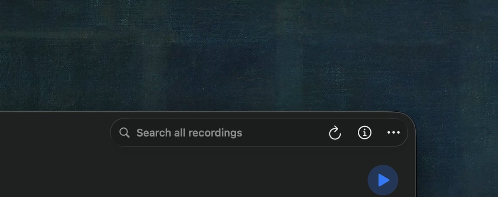
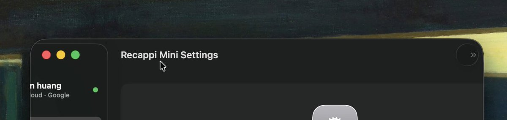

奶昔🥤
@realNyarime
@hwwaanng 苹果是不是也一堆三哥在开发


Hwang
@hwwaanng
一个你可能不知道的 SwiftUI 冷知识
macOS 26 上新样式的侧边栏，在有些 window 下点击会卡顿，如视频 1
有些 windows 下又不回，如视频 2
为什么？其实你只要在 content 区域添加一个 toolbarItem （ 图 search all ...） 就可以避免卡顿了。
其实就是收起的时候触发了一下 toolbar https://t.co/W7mABqxfj8